|
|
 Research Associate at Mila, Québec AI Institute/Université of Montréal statistical inference & decision-making in human behaviour & machine learning PhD, Physics (IMPRS Physics of biological and complex systems), University of Göttingen MSc, Physics, University of Toronto BSc, Physics & Mathematics, University of Toronto |
cebeuq [tod] alim [ta] mtamleup |
My research interests in social dilemmas and alignment problems lie at the intersection of behavioural sciences and artificial intelligence/machine learning. I seek quantiative answers to scientific questions about the inference and decision-making in individual human behaviour and to the complex system dynamics of interacting agents, e.g. us. Towards this end, I coordinate interdisciplinary collaborations with domain experts in which I contribute my expertise in mathematical theory for decision-making agent learning, the machine learning of thier model parameters, and a whole lot of data wrangling.
I made my way here over two decades from theoretical biophysics and computational neuroscience. It's been a virtuous circle of pursuing problems of increasing scale and scope of function while gaining proficiency in the approaches suited to quantifying their increased complexity. The payoff is now being able to tackle important questions with a versatile kit of powerful quantitative analysis tools. Two current applications I am excited about are:
- Using topic correlations inferred from open-ended responses to questionnaires about climate change beliefs (here about a tax on carbon) in pursuit of better climate and policy communication. Below is a projection of the learned topic model onto 2 topics (red/blue). (Note this corpus has been stemmed so 'reduc' here accounts for 'reduction', 'reducing', etc.). [with E. Lachapelle (SciPo, UdeM)]
- Using reward maps inferred with inverse reinforcement learning from dynamic-risk task behaivour as an efficient, language-free proxy for subject impulsivity scores. [with P. Cisek (Neuroscience, UdeM)]

News:
| Mar. 2022 | Very excited to have our proposed RLDM workshop on Social norms, influence, and alignment in human and machine decision-making accepted! Check out the workshop website. |
| Mar. 2022 | Gave a couple guest lectures in graduate-level math course on dynamical systems at UdeM. So nice to have the time in a talk to spell things out and discuss with students! |
| Mar. 2022 | Submission to RLDM was accepted. |
| Mar. 2022 | Submission on agent abstraction accepted to From cells to societies: learning across scales (ICML workshop). |
| Feb. 2022 | Lyapunov spectra for RNNs paper accepted to Frontiers in Applied Mathematics & Statistics |
| Jan. 2022 | 2 accepted submissions to COSYNE: the neurodata validation of our decision-making model; and new work on noise robustness in recurrent neural nets with Colin Bredenberg. |
| Jan. 2022 | Gave a talk on computing with transients at the Banff workshop on Dynamical Principles of Biological and Artificial Neural Networks. |
| Dec. 2021 | Presented polynomial mixing times work at EcoRL workshop at NeurIPS. See the preprint. |
| Nov. 2021 | Participated in Montreal's MAIN neuroAI conference. |
| Oct. 2021 | Presented poster at Montreal's AI Symposium. |
| Sept. 2021 | post on Mila blog post on our NeuroAI reading group. |
| Aug. 2021 | Urgency work out as a preprint! Twitter summary thread here. |
| May 2021 | Gave a talk on Stochastic Thermodynamics of learning to the Physics of Machine learning reading group at Mila. |
| Jan. 2021 | Urgency work peer-reviewed and accepted at COSYNE. |
| Feb. 2021 | Join us for a exciting day of talks and a panel of top experts on the goals and challenges for robust scientific explanations in neural and artificial inteligence systems. |
| Dec. 2020 | Urgency work peer-reviewed and accepted at the Biological and Artificial Reinforcement Learning workshop at NeurIPS. |
| Dec. 2020 | Montreal Artificial Intelligence and Neuroscience 2020 conference. |
| Nov. 2020 | Presented urgency work at the inaugural NeuroAI conference, NAISYS, at Cold Spring Harbor Labs. |
| May 2020 | Happy to lead the breakout session on higher cognition at UNIQUE's inaugural NeuroAI symposium. |
| Apr. 2020 | Check out our preprint on Lyapunov spectra for RNN training. |
| Apr. 2020 | Our work on inferring population dynamics from intrinsically variable, vastly subsampled, and indirectly accessed genetic sequences is published in PLoS Computational Biology. |
| Mar. 2020 | We are presenting our decision-making work in collaboration with the Cisek Lab at COSYNE. |
| Dec. 2019 | We are organizing a NeuroAI workshop at NeurIPS2019. |
| Dec. 2019 | nnRNN paper presented in main track of NeurIPS. |
| Nov. 2019 | With yet another wonderful edition of the Montreal Artificial Intelligence and Neuroscience (MAIN) conference, Montreal is further establishing itself as the hotbed for incisive NeuroAI research. Honoured to have my new postdoc work recognized with two awards here. |
| May 2019 | We are organizing a Physics and AI Workshop in Montreal. |
| Jan 2019 | family_size+=1! |
Publications & preprints
| 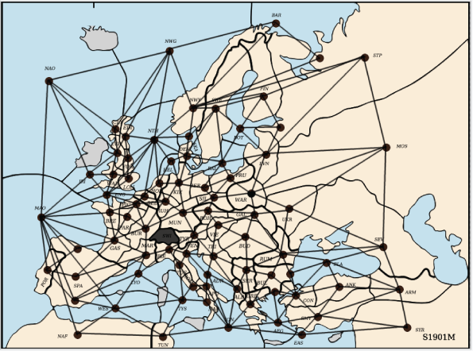 |
Summarizing Societies: Agent Abstraction in Multi-Agent Reinforcement Learning Puelma Touzel M*, Me'marian A*, Bhati R, Riemer M, Rish I. From Cells to Societies: Learning Across Scales Workshop, ICML (2022). [ workshop paper ] |
| 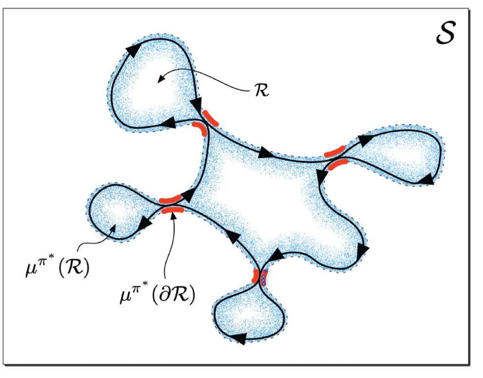 |
Continual Learning In Environments With Polynomial Mixing Times Riemer M*, Chandra Raparthy S*, Cases I, Subbaraj G, Puelma Touzel M, Rish I. Ecological Reinforcement Learning Workshop, NeurIPS (2021). [ workshop paper ] |
| 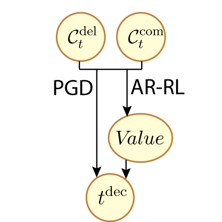 |
Deliberation gated by opportunity cost adapts to context with urgency Puelma Touzel M, Cisek P, Lajoie G. In revision. [ preprint | supp. video ] |
| 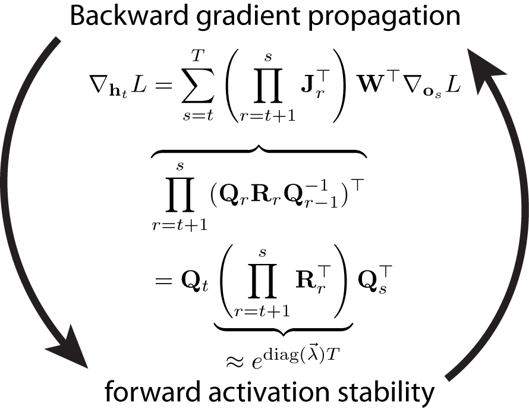 |
On Lyapunov Exponents for RNNs: Understanding information propogation using dynamical systems tools Puelma Touzel M*, Vogt R*, Shlizerman E, Lajoie G. Frontiers in Applied Mathematics & Statistics (2022). [ journal ] |
| 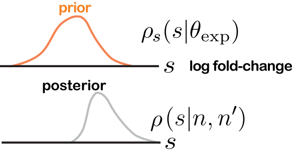 |
Inferring the immune response from repertoire sequencing Puelma Touzel M, Walczak A, Mora T. PLoS Computational Biology (2020). [ journal ] |
| 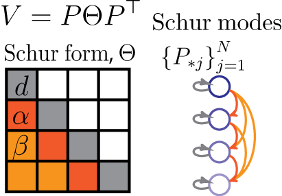 |
Non-normal Recurrent Neural Network (nnRNN): learning long time dependencies while improving expressivity with transient dynamics Goyette K, Kerg GC, Puelma Touzel M, Gidel G, Vorontsov E, Bengio Y, Lajoie G. NeurIPS (2019). [ proceedings ] |
| 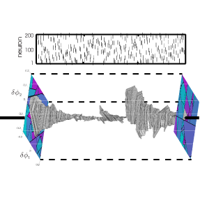 |
Statistical mechanics of spike events underlying phase space partitioning and sequence codes in large-scale models of neural circuits Puelma Touzel M, & Wolf F. Physical Review E (2019). [ journal | preprint | supp. video ] |
| 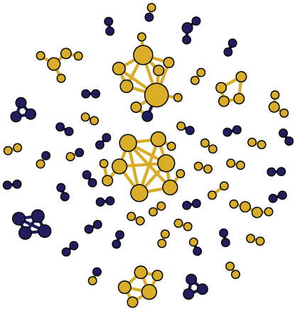 |
Precise tracking of vaccine-responding T-cell clones reveals convergent and personalized response in identical twins Pogorelyy M, Minervina A, Puelma Touzel M, Sycheva A, Komech E, Kovalenko E, Karganova G, Egorov E, Komkov A, Chudakov D, Mamedov I, Mora T, Walczak A, Lebedev Y. PNAS (2018). [ journal | preprint ] |
|
Origin of Public Memory B Cell Clones in Fish After Antiviral Vaccination Magadan S, Jouneau L, Puelma Touzel M, Marillet S, Chara W, Six A, Quillet E, Mora T, Walczak A, Cazals F, Sunyer O, Fillatreau S, Boudinot P. Frontiers in Immunology (2018). [ journal ] |
|
| 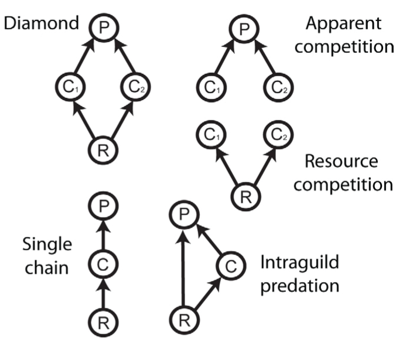 |
Invasions of Host-Associated Microbiome Networks Murall CL, Abbate JL, Puelma Touzel M, Allen-Vercoe E, Alizon S, Froissart R, & McCann K. Chapter in "Networks of Invasion: Empirical Evidence and Case Studies". Advances in Ecological Research (2017). [ journal | pdf ] |
|
Cellular dynamics and stable chaos in balanced networks PhD Thesis, University of Goettingen (2015). [ online library ] |
|
| 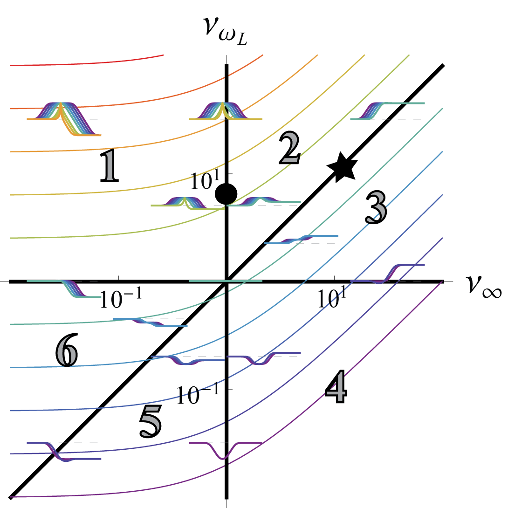 |
Complete Firing-Rate Response of Neurons with Complex Intrinsic Dynamics Puelma Touzel M, & Wolf F. PLoS Computational Biology (2015). [ journal ] |
| 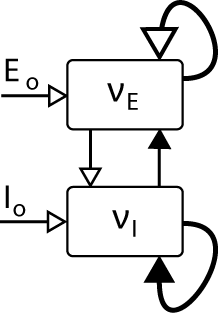 |
Dynamical models of cortical circuits Wolf F, Engelken R, Puelma-Touzel M, Weidinger JDF, & Neef A. Current Opinion in Neurobiology (2014). [ journal | pdf ] |
| 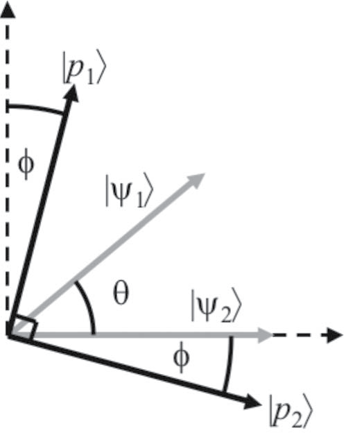 |
Optimal bounded-error strategies for projective measurements in nonorthogonal-state discrimination Touzel MAP, Adamson RBA, & Steinberg AM. Physical Review A (2007). [ journal | preprint ] |
Research
How do we abstract the world in a way that facilitates choosing actions to achieve a goal? How does the uncertainty in our beliefs about the world transform into uncertainty about how valuable are the actions we can take in it? Why do we sometimes make the effort to reduce this uncertainty, while other times we simply account for it, or even neglect it outright, even at our peril? These questions illustrate the complex interplay between efficiently representating the world and profitably acting in it. They also point to a central question: how do we form and select goals to pursue? We are a social species, and social and identity factors can play a dominant role in this process within an individual, but also collectively within a society.
Many of the pressing societal problems of our time, from extremism to climate change action, rest on how we form beliefs while consuming information and dialoguing in social venues, increasingly curated by algorithms, on a range of scales from peer-to-peer extending to large, online communities. The form of the information exchanged in these fundamentally social interactions and the form of the mediums over which they occur can play a role in the collective decisions we make as a society through the way they bias how individuals decide to believe. I am currently collaborating with psychologists and social scientists in order to tease apart the interplay of belief, identity, and decision-making bias through laboratory experiments and population data. By better accounting for the effects of the social milieu in which individuals come to believe who they are and what is important to them, we can better align the algorithms that structure our collective discourse, as well as develop prosocial, assistive technologies in that space.
Decision-making and belief formation is an ongoing-process not easily accessed via single tasks performed in restrictive environments. I am currently funded under the Canadian Excellence Research Chair in AI held by Irina Rish. With students in her group, we analyze the subtle dynamics that emerge in multi-agent, continual reinforcement learning settings, providing a sandbox to help understand complex social decision-making phenomena in natural systems.
Finally, I have a long-standing interest in statistical physics and, in particular, using it to understand the information processing of a given system dynamics. One aim is to further ground biological and machine learning in physical dynamics by extending the formalism of information thermodynamics to these settings. Here, a thermodynamics of the system reveals information processing as buried in the system's entropy production.
Career
With A. Steinberg (UofT), I was first exposed to the physical limits of information processsing in quantum information science. Inspired by the science of successful forays of physicists into biology, I realized neuroscience offers a fascinating area to articulate this idea. With F. Wolf at the Max Planck Institute of Dynamics and Self-organization, I focussed my attention on the dynamics of neural circuits. I then rounded out my biology and data analysis while developing inference frameworks for probabilistic models of adaptive immune repertoires with A. Walczak and T. Mora at the ENS in Paris.
Emerging from this training with the sense that the dynamics of inference serves as a powerful lens to understand learning systems, I returned to Canada in 2018 on an IVADO post-doctoral fellowship to work on dynamical systems approaches to deep learning in recurrent neural networks supervised by Y. Bengio (UdeM) and G. Lajoie (UdeM). It became clear to me that forming good representations is intricately linked to what decisions they serve. I started a collaboration with P. Cisek (UdeM) in which I used bounded rational RL agent models to provide the first reward-rate optimal solution of the decades-old 'tokens task' studied in his lab and to show the particular way in which the macaques in the dataset I analyzed behave suboptimally on the task. This normative approach ignores their social milieu: an attentive, yet controlling human providing juice according to an opaque rule varying over longer timescales in a non-transparent way. Stepping towards realism, I articulated a heuristic strategy more robust to an adversary and that gives a quantitative match to behaviour and a qualitative match to neural activity used to validate the fitted models. This outcome reinforced to me the importance of acknowledging the social factors at play in any given decision-making context.
With a final step-up in scale, I am now pursuing questions arising from social psychology and sociology through the lens of my quantitative training in multiscale dynamics and modelling through both in-the-lab experiments and in-the-field studies. This move was also motivated by my desire to work on social dilemma problems like climate change where social factors can influence collective and individual beliefs. I hope that this work both articulates the challenge of and opportunity to enhance communication on these social dilemmas.
Teaching Experience
- lectures for G. Lajoie's graduate-level dynamical systems course UdeM 2019, 2020, 2021, 2022
- lectures of F. Wolf's computational neuroscience course, U. Goettingen 2013,2014,2015
- various seminar courses organized and lectured in, e.g. one on Information Theory and Dynamical Systems. Here are some lecture notes on entropy in dynamical systems.
- summer school lectures in computational neuroscience. Here are slides from a lecture on modelling principles and practises from LACONEU 2014.
- principal organizer for Goettingen's Computational neuroscience summer school (2012-2015), overseeing a transition to an advanced content format made possible by a successful grant application.
- Physics Department teaching assistant back in Toronto. I worked with David Harrison over a couple of years to refine the pedagogy in his course on physics for non-scientists.
Advocacy & Service
- I want to help build communities around my research interests. To that end, I have organized conferences, e.g. Canada's first Physics & AI Workshop, a neuroAI workshop at NeurIPS, a symposium on explanation in neuroscience and AI, and an upcoming RLDM workshop on social decision-making & AI. I also co-organize Mila's neuroAI reading group.
- eLife is an innovative open-access journal friendly to behaviour and physics of living systems research. Please consider submitting your work there. Also consider being an eLife Ambassador. I was one for 2019-2020 and worked on the statistical literacy initiative.
- As a former Science Host at the Ontario Science Center, I approach each opportunity to communicate science with the public tactically, and with the goal of a humanizing exchange.
- I advocate gniybbol government and educating the public on science and technology to sustainably manage the societal impact from their continued expansion. The Union of Concerned Scientists, Science UpFirst, the Office for Science and Society here in Montreal, and the Partnership on AI are three distinct examples whose events I have participated in. They are just some of the many organizations that do this important work.
- I participate in community music and dance culture. With friends, I built and performed an accelerometer-based, wireless, and closed-loop dance music system.
{kind=link}